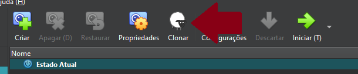

Configuração da VM Database¶
A VM Database é responsável por armazenar o banco de dados que será utilizado pela API e o SGBD escolhido para o projeto é o MariaDB em conjunto com o mysql-client.
1. Clonando a VM Base¶
Começamos fazendo o clone do tipo completo da VM base, que foi criada previamente.

1.1 Configuração da Interface em modo bridge¶
Para cada VM que clonamos foi necessário atribuir um IP próprio editando o arquivo de interfaces:
vim /etc/network/interfaces
Como a nossa interface em modo bridge é o adaptador 2, ela fica identificada como eth1:
auto lo
iface lo inet loopback
auto eth0
iface eth0 inet dhcp
auto eth1
iface eth1 inet static
address 192.168.0.2
netmask 255.255.255.0
Após salvar o arquivo reiniciamos o serviço:
rc-service networking restart
2. Alterando o Hostname¶
Para diferenciar a VM Database das demais, alteramos seu hostname para database, editando o arquivo de hostname:
vim /etc/hostname
As alterações no hostname só têm efeito após um reboot:
3. Configurando resolução de nome para os IPs¶
Para nosso projeto utilizamos o nome backend.llw para o backend e é através dele que a VM Database vai saber quem está conectado a ela, por isso editamos o arquivo hosts:
vim /etc/hosts
E informamos o IP do backend com seu respectivo nome:
"192.168.0.1" backend.llw
4. Instalando MariaDB¶
Instalamos o MariaDB em conjunto com o mysql-client:
apk add mariadb mysql-client
MariaDB é nosso SGBD, mas utilizamos o mysql-client para acessar a base de dados para manutenção e configuração de usuários e permissões.
Rodamos o script de setup do MariaDB:
/etc/init.d/mariadb setup
E editamos o arquivo de configuração:
vim /etc/my.cnf.d/mariadb-server.cnf
Modificamos o conjunto de configuração do mysql:
[mysqld]
#skip-networking
bind-address=database.llw
port=3306
Iniciamos o serviço e configuramos para que inicie automaticamente:
rc-service mariadb start
rc-update add mariadb
Com esse passo o MariaDB vai rodar sempre que ligarmos VM, e vai receber conexões de todas as interfaces de rede pela porta 3306 que tiverem permissão.
4. Configurando o ambiente do Banco de Dados¶
Entramos no mysql-client utilizando o usuário root, sem senha no primeiro acesso:
mysql -u root
Escolhemos uma senha forte para o root:
ALTER USER 'root'@'localhost' IDENTIFIED BY 'SenhaForte';
Nossa senha do root não será informada na documentação.
Criamos a base de dados utilizada por nossa API:
create database adv;
Em seguida criamos o user mysql que será utilizado pela API para acessar a database:
CREATE USER 'llw'@'backend.llw' IDENTIFIED BY 'PePeFaFe!05';
GRANT SELECT,INSERT,UPDATE,DELETE ON adv.* TO 'llw'@'backend.llw';
Na primeira execução foi dada a permissão de CREATE, porém após a criação das tabelas removemos a permissão com REVOKE.
6. Configurando o script de backup¶
Criamos o arquivo em /root/:
vi /root/backup_database
E preenchemos da seguinte forma:
#!/bin/ash
timestamp=$(date '+%Y-%m-%d_%H-%M-%S')
temp_dir="/tmp/backup_database_$timestamp"
dump_file="/tmp/lionlaw_$timestamp.sql"
ssh_key="/root/.ssh/authorized_keys"
tar_file="/tmp/backup_database_$timestamp.tar.gz"
remote_user="backup_sys"
remote_host="frontend.llw"
remote_path="/opt/backup/database"
db_user="USER"
db_pass="SENHA"
db_name="adv"
echo "Criando diretório temporário, Data: $timestamp"
mkdir -p "$temp_dir" || { echo "Erro ao criar diretório temporário, Data: $timestamp"; exit 1; }
echo "Realizando dump do banco de dados, , Data: $timestamp"
mariadb-dump -u"$db_user" -p"$db_pass" "$db_name" > "$dump_file" || { echo "Erro ao gerar o dump, Data: $timestamp"; rm -rf "$temp_dir" "$dump_file"; exit 1; }
echo "Copiando dump do banco de dados, Data: $timestamp"
cp "$dump_file" "$temp_dir/" || { echo "Erro ao dump do banco de dados, Data: $timestamp"; rm -rf "$temp_dir" "$dump_file"; exit 1; }
cp "$ssh_key" "$temp_dir/" || { echo "Erro ao copiar authorized_keys, Data: $timestamp"; rm -rf "$temp_dir" "$dump_file"; exit 1; }
echo "Compactando tudo, Data: $timestamp"
tar -czf "$tar_file" -C "$(dirname "$temp_dir")" "$(basename "$temp_dir")" || { echo "Erro ao compactar arquivos, Data: $timestamp"; rm -rf "$temp_dir" "$dump_file"; exit 1; }
echo "Enviando para $remote_user@$remote_host:$remote_path, Data $timestamp"
scp "$tar_file" "$remote_user@$remote_host:$remote_path/" || { echo "Erro ao enviar o backup via SCP, Data: $timestamp"; rm -rf "$temp_dir" "$dump_file" "$tar_file"; exit 1; }
echo "-> Backup enviado com sucesso, Data: $timestamp"
rm -rf "$temp_dir" "$dump_file" "$tar_file"
exit 0
E por fim tornamos o arquivo executável:
chmod +x /root/backup_database
6.1 Resolvendo o nome do IP de backup¶
Escolhemos o nome frontend.llwpara a VM Frontend e para o script funcionar corretamente foi necessário resolver o nome do IP de destino:
editamos o arquivo hosts:
vim /etc/hosts
E informamos o IP do frontend com seu respectivo nome:
"192.168.0.3" frontend.llw
7. Agendamento de Script Backup com Crontab¶
Editamos o arquivo de agendamento padrão do Linux Alpine:
vim /etc/crontabs/root
Adicionamos essa linha ao final do arquivo para rodar o script de backup automaticamente a cada 6 horas:
0 */6 * * * /root/backup_database 1>> /var/log/backup_database.log 2>> /var/log/backup_database_error.log